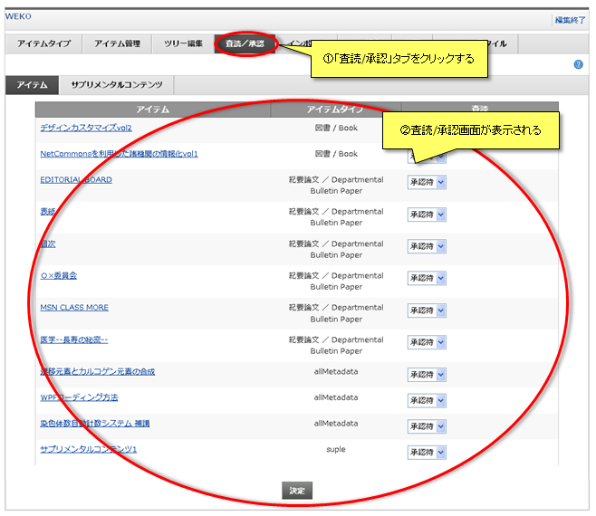
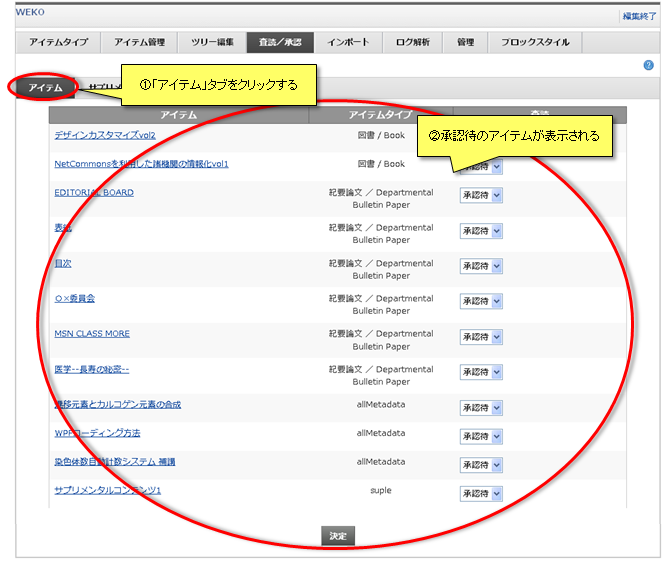
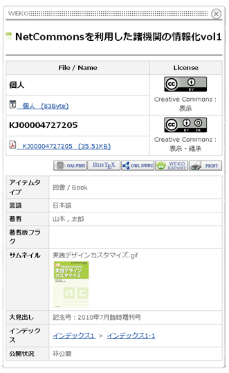
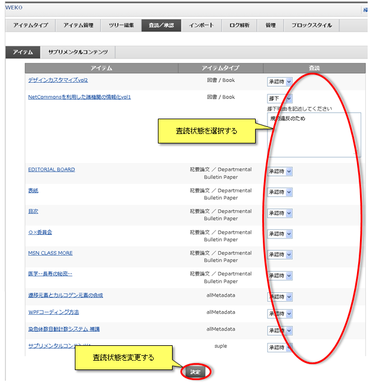
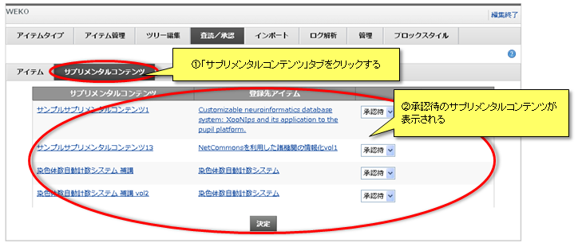
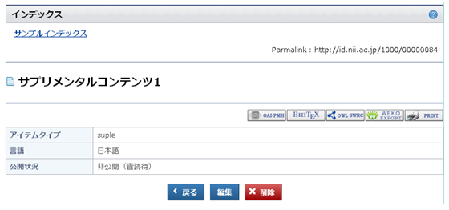
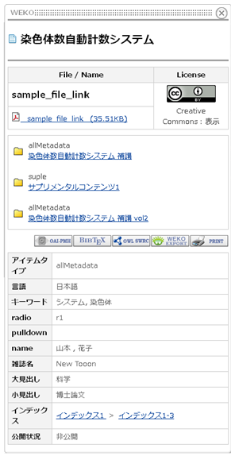
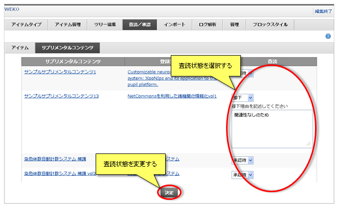

査読／承認
「査読／承認」タブをクリックすると査読／承認画面が表示されます。
登録されたアイテムおよびサプリメンタルコンテンツを査読し、承認および却下を行うことができます。

登録されたアイテムおよびサプリメンタルコンテンツを査読し、承認および却下を行うことができます。
アイテム
査読／承認画面の「アイテムタブ」をクリックすると、承認待のアイテムが表示されます。
登録されたアイテムを査読し、承認および却下を行うことができます。

登録されたアイテムを査読し、承認および却下を行うことができます。
アイテム詳細情報の表示
アイテムのタイトルをクリックするとそのアイテムの詳細情報がポップアップで表示されます。

アイテムの査読状態の変更
各アイテムの査読状態を選択し、「決定」ボタンをクリックすると査読状態が変更されます。
承認または却下が選択されたアイテムの登録者および編集者が査読結果通知メールを受信する場合、自動でメールが送信されます。

【注意事項】
承認または却下が選択されたアイテムの登録者および編集者が査読結果通知メールを受信する場合、自動でメールが送信されます。
| 査読状態 | 内容 |
|---|---|
| 承認待 | 承認待の状態を維持します |
| 承認 | アイテムを承認し、公開できるようにします |
| 却下 | アイテムを却下します |
【注意事項】
- 査読結果通知メールを送信するにはNetCommons2のシステム管理からメール設定が行われている必要があります。
サプリメンタルコンテンツ
登録されたサプリメンタルコンテンツを査読し、承認および却下を行うことができます。
画面上には承認待のサプリメンタルコンテンツのみ表示されます。


また、登録先アイテムのタイトルをクリックするとそのアイテムの詳細情報がポップアップで表示されます。

画面上には承認待のサプリメンタルコンテンツのみ表示されます。
サプリメンタルコンテンツ詳細情報の表示
サプリメンタルコンテンツのタイトルをクリックすると別ウインドウが開き、サプリメンタルコンテンツ本体のアイテム詳細画面が表示されます。
また、登録先アイテムのタイトルをクリックするとそのアイテムの詳細情報がポップアップで表示されます。
サプリメンタルコンテンツの査読状態の変更
各コンテンツの査読状態を選択し、「決定」ボタンをクリックすると査読状態が変更されます。
承認または却下が選択されたサプリメンタルコンテンツの登録者および編集者がサプリメンタルコンテンツの査読結果通知メールを受信する場合、自動でメールが送信されます。

【注意事項】
承認または却下が選択されたサプリメンタルコンテンツの登録者および編集者がサプリメンタルコンテンツの査読結果通知メールを受信する場合、自動でメールが送信されます。
| 査読状態 | 内容 |
|---|---|
| 承認待 | 承認待の状態を維持します |
| 承認 | サプリメンタルコンテンツを承認します |
| 却下 | サプリメンタルコンテンツを却下します |
【注意事項】
- サプリメンタルコンテンツの査読結果通知メールを送信するにはNetCommons2のシステム管理からメール設定が行われている必要があります。